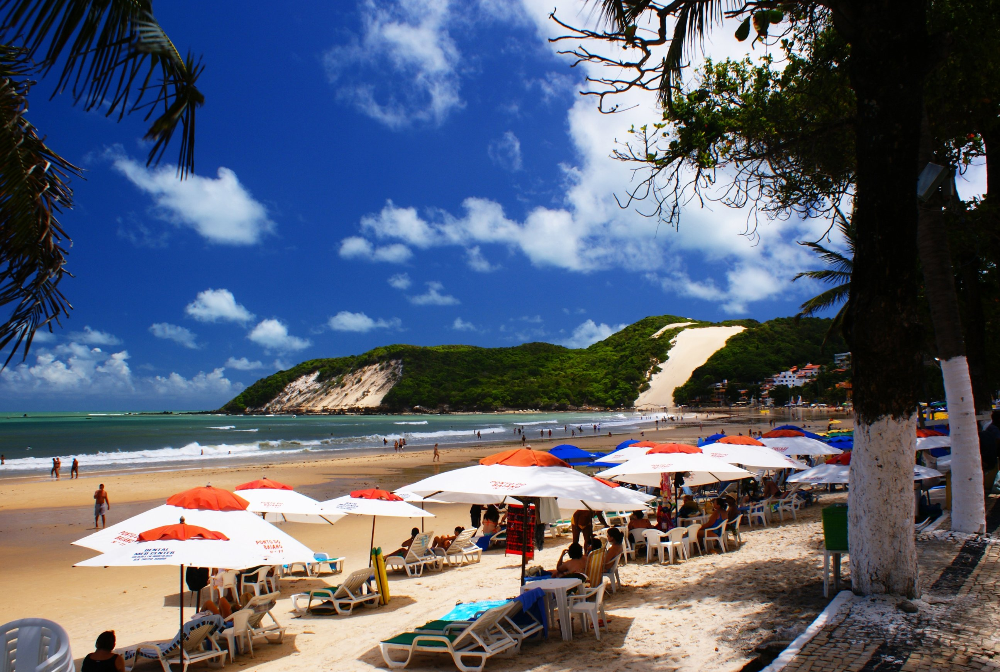
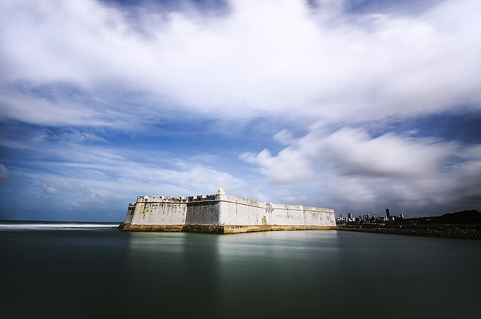
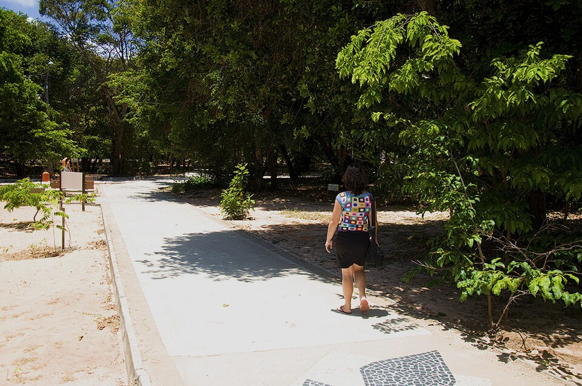
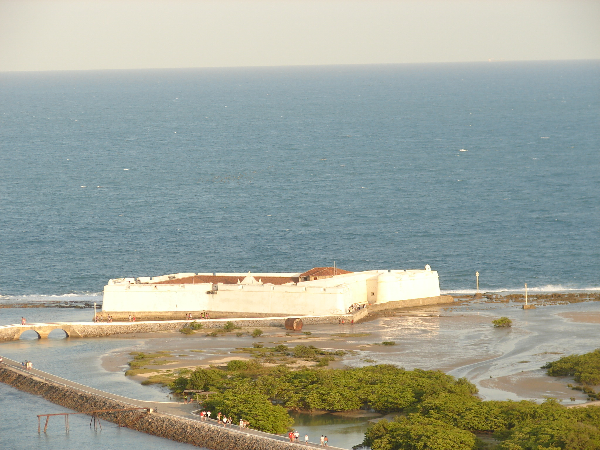
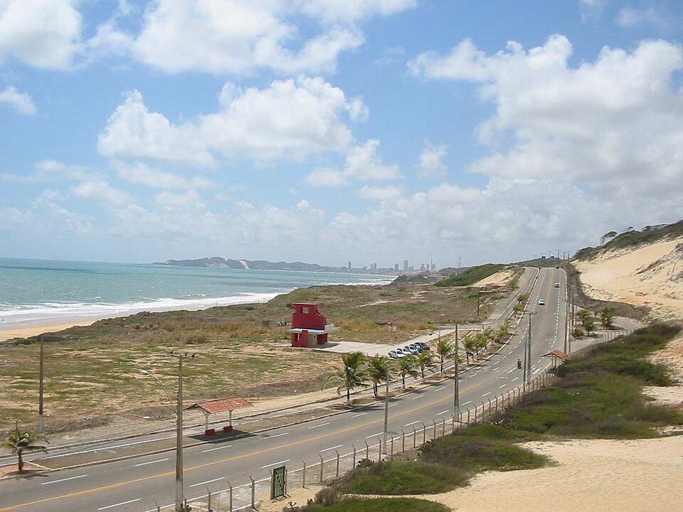

Os principais pontos turísticos de Natal, no Rio Grande do Norte, reúnem praias paradisíacas, dunas históricas e marcos culturais importantes que podem ser explorados neste guia:

Uma das praias mais famosas de Natal, conhecida pelo Morro do Careca.

Uma das praias mais famosas de Natal, conhecida pelo Morro do Careca.

Área de preservação ambiental com trilhas e vegetação nativa.

Importante ponto turístico e histórico de Natal, inaugurado em 1951.

Avenida turística com belas paisagens do litoral de Natal.